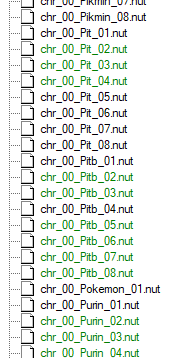

No Simp September
published: 2021-09-28
I was going to title this post "'Dying makes you gay' and other sayings my brothers insist aren't homophobic", but this one is funnier, if only because it's the excuse I've been using throughout this month to try to get my youngest brother to shut up about his video game waifu. "It doesn't make any sense," I keep reminding him. "Don't you think it's a little hypocritical to constantly call me a degenerate and tell me to kill myself, and then copy all my spiritual beliefs while still calling yourself a Christian? How do you think your God feels about your imaginary girlfriend?"
His only reply, of course, is a "joke" about ejaculation.
The radical feminist in me wants me to give up. He is unlikely to ever change, the sweet boy he was in elementary school gone forever. I bought him a computer because his shitty Chromebook couldn't emulate N64 games, and he still persists in his abhorrent behavior. I took him out on myriad bike rides and bought him ice cream, and he still persists in his abhorrent behavior. I spent three days working on his birthday present: I installed homebrew on his Wii U and set up a modding environment for Sm4sh (on his second hard drive, which has the only copy of Windows 10 between us) so that he could play as... a shopping cart, an Oreo, a literal island straight out of the sea, and a penguin who always seems to be high on marijuana. Along with others.

And he still persists in his abhorrent behavior.
Normally, I would not have bothered. Unless there are "funny meme" mods installed, said brother hates Sm4sh (and, really, any game I've ever expressed even the slightest interest towards) with a burning passion, and would rather play the next entry in the series where he can start a private online lobby with his friends and bang on my door to taunt me about how he's purposely excluding me. (Of course, most of the time, I am busy with something else anyway, and so I barely notice.) But Sm4sh is where I met my girlfriend, almost... seven years ago? (Has it really been that long since Christmas Eve 2014? Where has the time gone?) Having to suffer through the millionth Mario joke gleaned from an overrated YouTube video is a small price to pay for also being able to shove in whichever mods I want. Which means, finally, better skins for The Person Who Is Definitely Not My Girlfriend.
Having to endure my brother complaining that I am not slaving away for his memes fast enough is a small price to pay for spending time with the person I love (ah, good old technomancy) and also having something to distract me from my downward spiral.
When I started MayVaneDay, I made a rule for myself to not discuss my "consoom"ing hobbies beyond maybe a passing comment or two. I did not want it to turn into a "fan site" for anything. I wanted it to only be about me and the things I had done, not to be beholden to someone else's creation for a sense of identity. But this is the Eschaton, after all, the Grand Downward Spiral... So now, for myself and no others, I shall recount all the little oddities I've found while compiling a family modpack.
Wow, I sure wish I knew how to count
This stupid game takes forever to dump to a microSD card, even when using specialized programs that generally run faster than traditional methods of dumping Wii U discs. The reason for this is because the game is just shy of sixteen gigabytes large, and about half of that is taken up by two files, dt00 and dt01. These contain basically any files that aren't DLC, background music, or sound clips for the various Easter eggs on certain stages. And after that, one needs to dump the patch files as well. The DLC doesn't need to be dumped; the actual models and textures live in the patch data, since all Smash games since Super Smash Bros. Brawl for the Wii have had an online play feature and DLC users need to be able to play with those only using the base game. The DLC basicaly amounts to a piece of paper saying "the player can use this". Not useful for modding.
Then one has to extract the files in dt00 and dt01. The only way I know of is with Sm4shExplorer. The developers only supply Windows binaries, and I couldn't figure out how to compile things in Visual Studio Code (which I only installed for the purpose of trying to compile this). After backing up the entire dump onto a spare flash drive I had in case my brother somehow managed to delete everything on accident and copying the dumped patch folder into the base folder, Sm4shExplorer "unzipped" (no actual extraction happened; it's a purely virtual file system) dt00 and dt01 and gave me access to the files.
Most character mods consist of two parts: the texture (sometimes a model comes along in the same folder), and the character selection portraits (hereafter referred to as CSPs). The texture goes in data\fighter\FIGHTERNAME\model\body, where FIGHTERNAME is the name of the character in lowercase and occasionally in some halfway localization with the original romaji. (For example, the files for Charizard live in "lizardon", and Jigglypuff in "purin".) CSPs live in data\ui\replace\chr and use the same names as above, just with the first letter capitalized.
Most characters have eight costume slots available for shoving mods into. But knowing which slot to put a mod into can get tricky, because for whatever godforsaken reason CSP numbering starts at one while the model numbering starts at zero. It also doesn't help that some characters have special models optimized for "eight player mode" (the standard is up to four players in a room) and so, if playing in a room with more than four players or a singleplayer mode that would use eight player mode's engine (like Classic or All-Star), the mods might just not show up anyway.
 
(The green parts in the above screenshots are how Sm4shExplorer indicates which files have been modded.)
Oh boy! Paying more money for worse graphics!
Super Smash Bros. Ultimate came out on December 7, 2018. I only remember this date because I was so desperate to get my hands on a copy of the game that I concocted an elaborate scheme to call in sick from my work-study (as I was at Hell College at the time) and convince my father to bring me home that weekend, as normally I would come home every other weekend due to work and that was the weekend I was scheduled to work. He was resistant at first, mocking me for not just buying a digital copy until I informed him that he had given me an ATM card, not an actual debit card, and I had no way of getting off campus to buy eShop gift cards.
Of course, as I was the only one in the family who owned a Switch at the time, we had to stick to the Wii U version if we wanted to play online with each other. Given this was at least twice a week, I am surprised it took as long as it did for me to realize that the Switch version seems to run at an abysmal resolution given its predecessor.
Take, for instance, this sample screenshot from my Switch, henceforth deemed "The Funny Butt Picture":

Gwenview says this image is 1280x720 pixels. That makes 0.9 megapixels. The actual resolution of the screen being played on doesn't seem to affect what size the Switch outputs screenshots at. Nor would an unusual aspect ratio affect it: the TV downstairs appears to have a perpetual overscan, whereas the one in my room (which I only ever use as a computer monitor) doesn't, meaning I have to constantly switch between 95% and 100% screen size for TV mode. (At least, until the USB port in my Switch got damaged and it lost the ability to connect to docks. Still charges with my phone cable, though.)
Now, for science, let's attempt to recreate this picture in Sm4sh. Because this is a Totally Legitimate science experiment, we have to keep as many variables constant as possible: the Battlefield stage, healing items enabled, playing team mode as Pyra accompanied by a purple Person Who Is Definitely Not My Girlfriend.
"Come on! We gotta recreate The Funny Butt Picture!"
"No."
"Please?"
"No. I thought you said we were going to play games together, not have you pause every five seconds to take a picture of me."
"Please?"
"Stop looking at me so much. Are we going to play or not?"
Gwenview says this image is 1920x1080 pixels, which comes out to 2.1 megapixels. This means, if my calculator isn't malfunctioning, the Sm4sh screenshot has more than twice as many pixels in it as the supposed "upgraded" Switch version is. But raw pixels alone doesn't determine which system takes more visually pleasing screenshots. Ultimate has a rather... overbearing art style, which I personally dislike because it makes cartoony characters edge too close to the uncanny valley of realisticness. It also makes much heavier use of shadows and other visual effects than its predecessor, and the characters have a wider range of facial expressions. If it output at the same resolution, it would make for superior screenshots, but the lack of visual clarity bothers me too much.
There is, of course, the minor issue that Pyra in the Sm4sh screenshot is an alternate costume over Shulk, and the model seems to have some rigging issues. But let's not focus on that.
My little brother comes downstairs while I'm screenshot farming. He starts chanting. "I love rings, rings, rings! I love rings, rings, rings! I love..." His voice suddenly drops an octave. "Divorce papers."
Death Of A Thicc Luigi
The only character mods I've found usable come with textures, models, and CSPs. For whatever reason, the textures also need to be "TexID fixed", an arcane process which I don't understand and don't bother with as every skin I want seems to already be "fixed" and functional. However, some mods only seem to come with a model. Which means, unless one goes through the process of "TexID fixing", said model doesn't mesh with the pre-existing textures and appears as a red blob. This makes me very sad, as I can't plunder skins from other modpacks I like.
But sometimes I put up with the red blobs anyway, because the end result is too funny to trash.
"Damn, boi! He thicc!"
Instant Death Minecraft Island
Nearly everything in Sm4sh can be modded, not just the characters. One of my favorite stage mods is what my brothers and I have come to affectionately refer to as "Instant Death Minecraft Island". "Instant Death" because it goes over the DLC stage Pirate Ship, and the ship has two stage hazards that can result in a character getting thrown off the stage: a little... flip thing that pops out on occasion, and a cannonball shot from another ship in the distance. Instant Death Minecraft Island hides both of these, but doesn't remove them, meaning, while the original Pirate Ship stage might make one have to jump back onto the ship or take a little damage, Instant Death Minecraft Island will just randomly make a player zoom off the screen at Mach 5, resulting in an instant death.
I was going to record some gameplay to prove this, but it turns out replays can only be ripped off a Wii U by uploading them to YouTube first or using an HDMI capture card, and I've already put too much effort into this post.
In conclusion
Clown. That is all I have to say.
CC BY-NC-SA 4.0 © Vane Vander